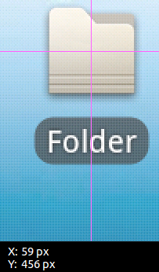
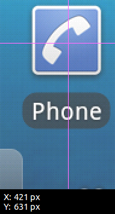

拖放（DnD）這個觸控手勢直接被 monkeyrunner API 支援：
drag(start, end, duration=1.0, steps=10)開頭隱含了一個長按（Long Press）的動作，才會進入拖拉的模式。其中：
-
start 跟 end 表示頭尾兩個座標值。
-
duration 表示手指頭從 start 移到 end 要花多少時間。
-
steps 會影響流暢度，但要怎麼給才合理？包括拿起跟放下，所以至少要 2 …. 跟徑不是平分的，而是由快到慢
 |
 |
>>> from com.android.monkeyrunner import MonkeyRunner, MonkeyDevice
>>> device = MonkeyRunner.waitForConnection()
>>>
>>> start = (421, 631) # phone
>>> end = (59, 456) # folder
>>> device.drag(start, end, 1, 10)從 drag() 底層的實作 AdbChimpDevice.drag() 來看：
public void drag(int startx, int starty, int endx, int endy, int steps, long ms) {
final long iterationTime = ms / steps;
LinearInterpolator lerp = new LinearInterpolator(steps);
LinearInterpolator.Point start = new LinearInterpolator.Point(startx, starty);
LinearInterpolator.Point end = new LinearInterpolator.Point(endx, endy);
lerp.interpolate(start, end, new LinearInterpolator.Callback() {
@Override
public void step(Point point) {
try {
manager.touchMove(point.getX(), point.getY());
} catch (IOException e) {
LOG.log(Level.SEVERE, "Error sending drag start event", e);
}
try {
Thread.sleep(iterationTime);
} catch (InterruptedException e) {
LOG.log(Level.SEVERE, "Error sleeping", e);
}
}
@Override
public void start(Point point) {
try {
manager.touchDown(point.getX(), point.getY());
manager.touchMove(point.getX(), point.getY());
} catch (IOException e) {
LOG.log(Level.SEVERE, "Error sending drag start event", e);
}
try {
Thread.sleep(iterationTime);
} catch (InterruptedException e) {
LOG.log(Level.SEVERE, "Error sleeping", e);
}
}
@Override
public void end(Point point) {
try {
manager.touchMove(point.getX(), point.getY());
manager.touchUp(point.getX(), point.getY());
} catch (IOException e) {
LOG.log(Level.SEVERE, "Error sending drag end event", e);
}
}
});
}Cross Reference: /sdk/chimpchat/src/com/android/chimpchat/adb/LinearInterpolator.java[
com.android.chimpchat.adb.LinearInterpolator]public class LinearInterpolator {
private static float lerp(float start, float stop, float amount) {
return start + (stop - start) * amount;
}
public void interpolate(Point start, Point end, Callback callback) {
int xDistance = Math.abs(end.getX() - start.getX());
int yDistance = Math.abs(end.getY() - start.getY());
float amount = (float) (1.0 / steps);
callback.start(start);
for (int i = 1; i < steps; i++) {
float newX = lerp(start.getX(), end.getX(), amount * i);
float newY = lerp(start.getY(), end.getY(), amount * i);
callback.step(new Point(Math.round(newX), Math.round(newY)));
}
// Generate final point
callback.end(end);
}參考資料
-
Diego Torres Milano’s blog: monkeyrunner: testing views properties (2012-01-28) - 有人提到
drag()的開頭有個 long press。